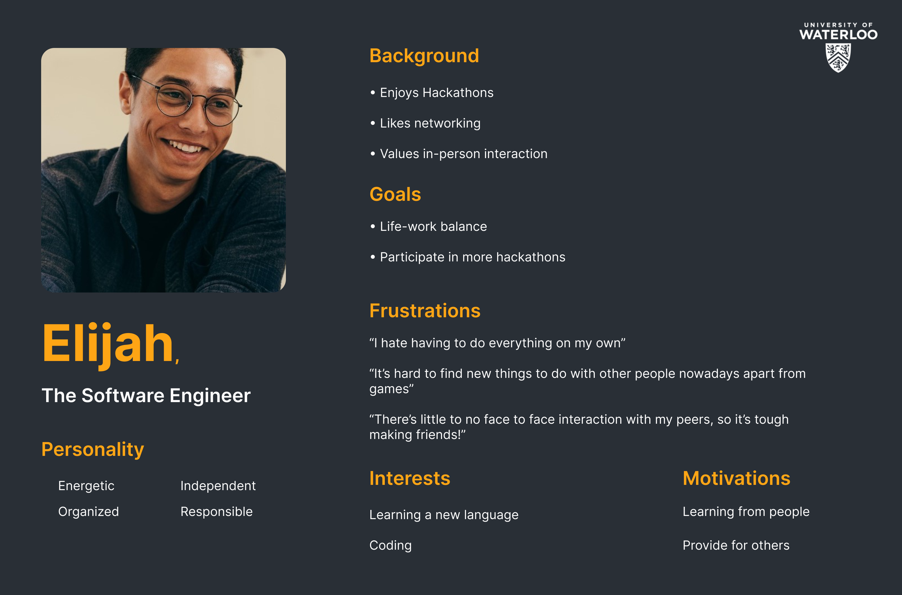
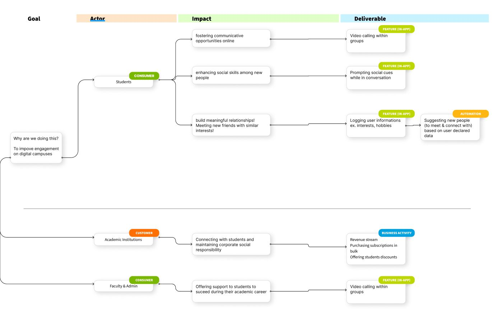
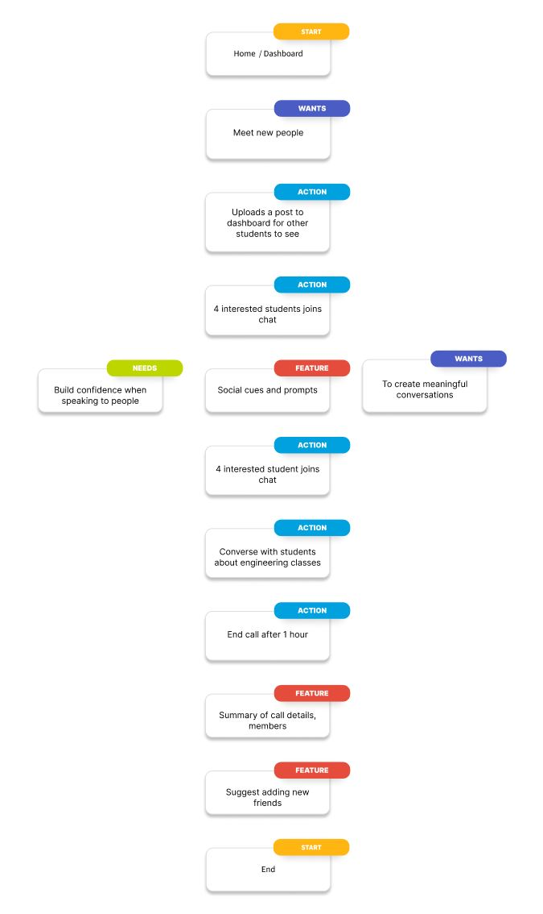
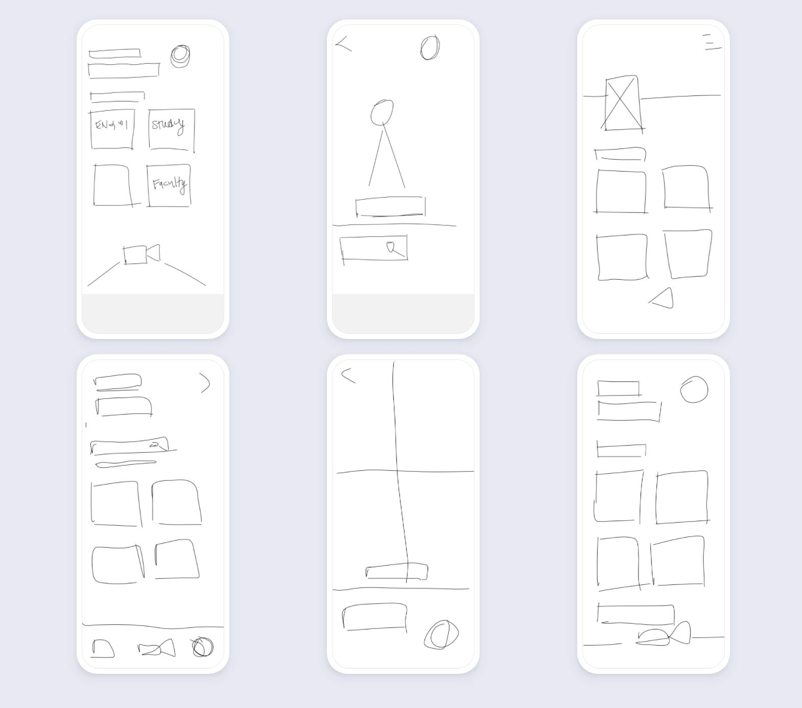
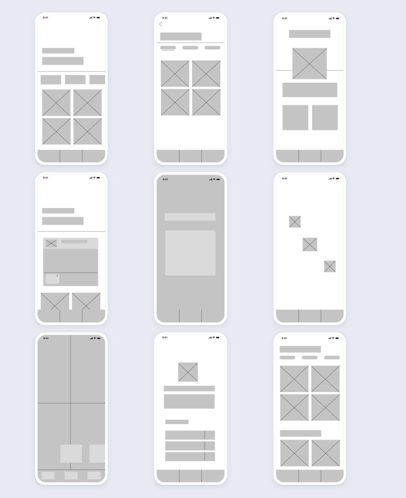

Design Question:
How might we improve student engagement on digital campuses?
1. Research
We wanted to gather feedback from our target demographic (school/university students). We set up an online survey and asked them fill it out.

- A google form was circulated among students
- We received 23 responses
- Students were asked to respond to the following questions:
- Are you open to meeting new people through online communication works?
- How often do you talk to your [School/University] classmates?
- How satisfied are you with the quality of social life at your [School/University]
- The following responses were received from a majority of participants:
- Yes
- Sometimes
- 70% chose > 3
- Participants were also asked to include a summary of how they felt about
attending university/school online. Below are some of the submitted responses:
- “I hate having to do everything on my own”
- “There’s little to no face to face interaction with my peers, so its tough making friends!”
- “Hard to find new things to do with other people nowadays apart from games”
Based on the survey we set up a persona. We referred to this persona throughout the entire product development process. Meet Elijah!
2. Ideation
Based on our findings, we derived the following key hypotheses: Students lack of face to face interactions with peers, Student are struggling in keeping up with schoolwork alone, Students are unable of making new friends during COVID-19. Thus, we came to the conclusion that students desire a service that enhances meaningful connections and allows them to simulate a more social learning. We developed the following impact map during our ideation for key features of our app.
3. Sketches
We began the design process with low fidelity wireframes. This way, we were able to iterate through many design options quickly. We conducted guerrilla testing and iterated on our design for the high fidelity prototype. Our participants gave us great feedback related to system visibility, recognition, and user efficiency.
We conducted guerrilla testing and iterated on our design for the high fidelity prototype. Our participants gave us great feedback related to system visibility, recognition, and user efficiency.
4. Wireframes and Design
At the beginning of the design process, we created wireframes for testing purposes. We created two low fidelity wireframe models that we used as a guide for creating a user flow chart and a high fidelity wireframe model. We mapped out how a user (Elijah for example) would navigate through our app
LoFi I
LoFi II
HiFi
Elijah wants to study for his CS course with some friends. However, due to COVID, he cannot do so. So he opens up TheHub and logs into his account.
There are many suggested discussion topics based on Elijah's interests that he can join. Since he's looking for a specific course, he looks under courses for ongoing calls. He can't find any, so he decides to share a post on TheHub.
Elijah posts a message about what he's looking for. After awhile, he gets a notification from the app. It's an invite from another Hub user for a group call for the course he wants to study for.

During the study session, Elijah and his study-buddies recieve conversation starter recommendations from the app. After they end the call, Elijah can add his new friends to his friend list. He can also view his profile, which contains information about his ongoing courses and interests.
What I've Learnt
I learned that building trust in a product doesn't require really fancy gadgets, but just empathy. I also learnt that students require some level of social interaction to remain motivated. Due to the pandemic, a lot of us have faced a decline in productivity. However, remaining connected can reboot our productivity levels.
What's Next?
The app needs more usability testing to be successful. After user testing, our team hopes to start developing the app. We also hope to include more features that may be useful to a user such as a the ability to create groupchats.